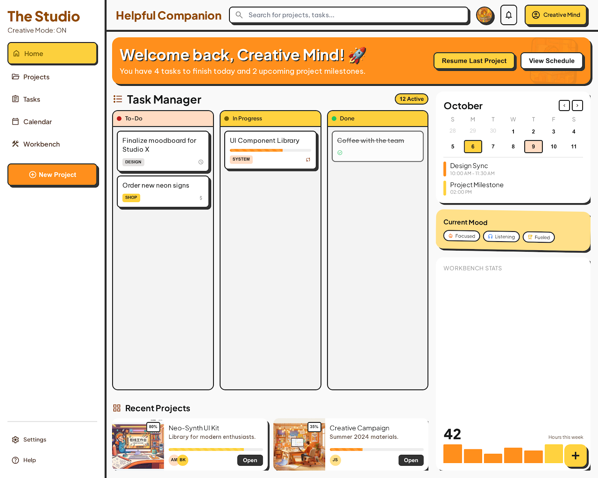
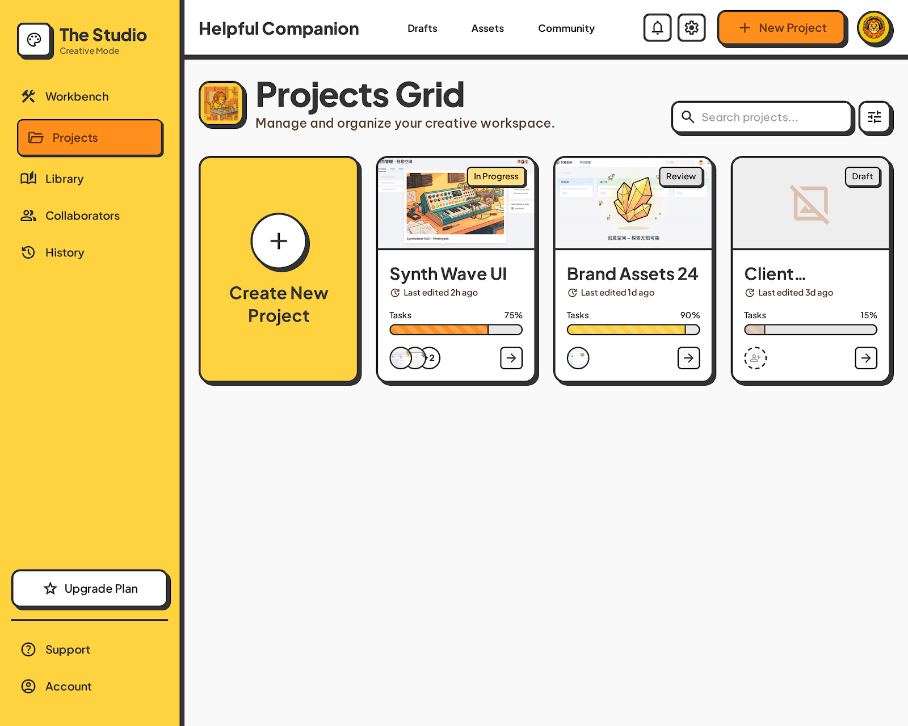
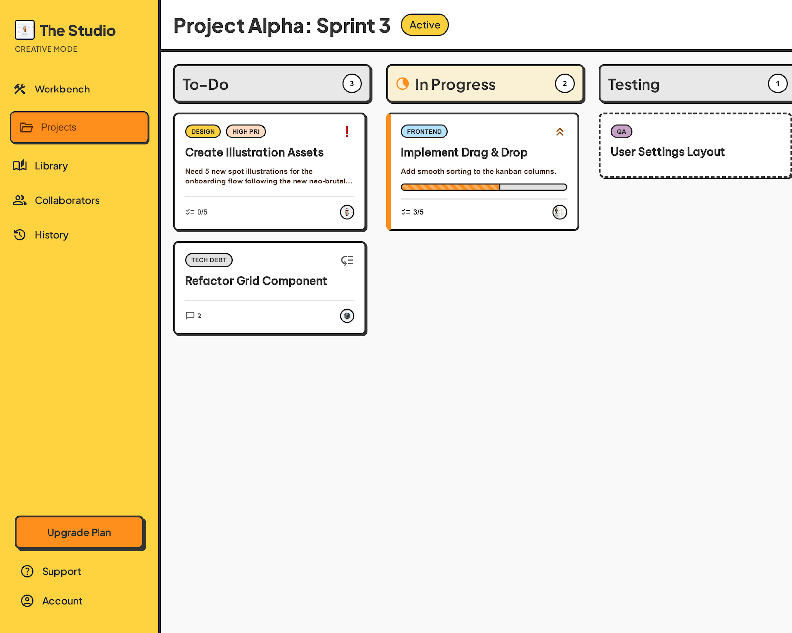
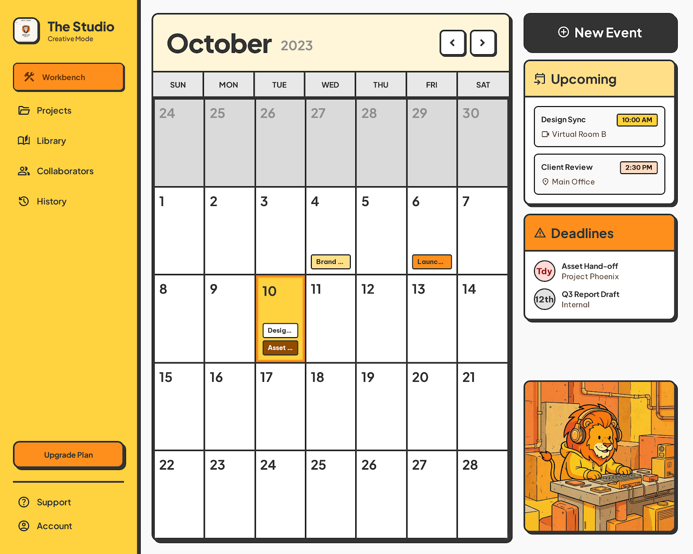
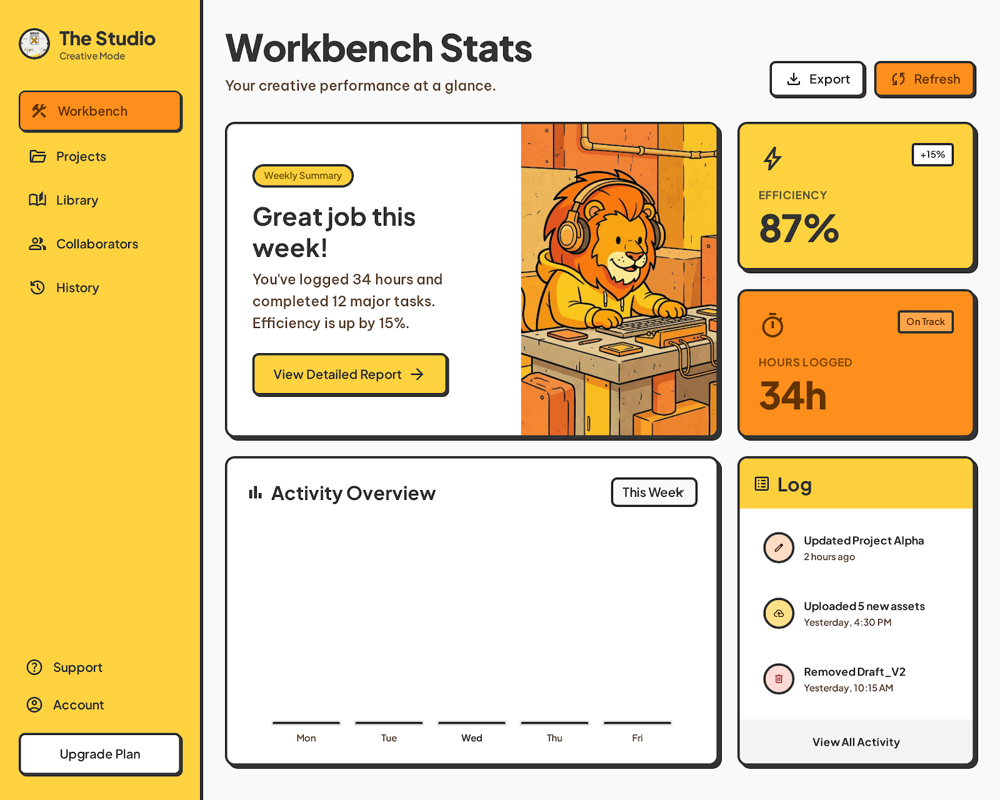
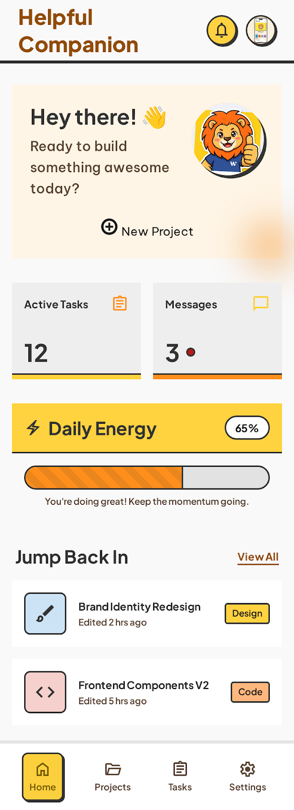

hub
欢迎来到卡通工作台预览集 🎨
这里收录了多个静态页面原型，风格统一为高对比描边、温暖橙黄配色和圆润造型。你可以直接点开任意版本查看效果，也适合用来做 GitHub Pages 快速预览。
view_carousel
页面版本

v1在线工作台 - 创意空间
综合首页：任务、项目、日历与统计一览。
open_in_new 打开页面
v2Projects - Helpful Companion
项目看板：项目卡片、进度和协作信息。
open_in_new 打开页面
v3Workbench - Tasks
任务管理：To-Do / In Progress / Testing 三栏。
open_in_new 打开页面
v4Helpful Companion - Calendar
创意日历：月视图与日程条目展示。
open_in_new 打开页面
v5Workbench - Helpful Companion
工作台统计：本周工时与完成情况。
open_in_new 打开页面
v6Workbench - Home
轻量首页：快速回到最近项目与任务。
open_in_new 打开页面
warning
其他
部署说明
- 将此仓库关联到 GitHub 后，在仓库 Settings → Pages 中选择部署来源。
- 若使用 GitHub Actions，可参考
.github/workflows/pages.yml自动发布到gh-pages分支。 - 若使用 直接部署，可将 Pages 来源设为当前分支根目录，入口文件为
index.html。 - 所有页面均为静态 HTML，可直接在浏览器打开，无需构建。